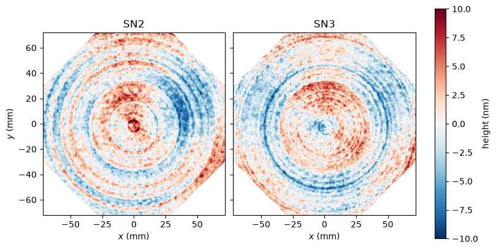
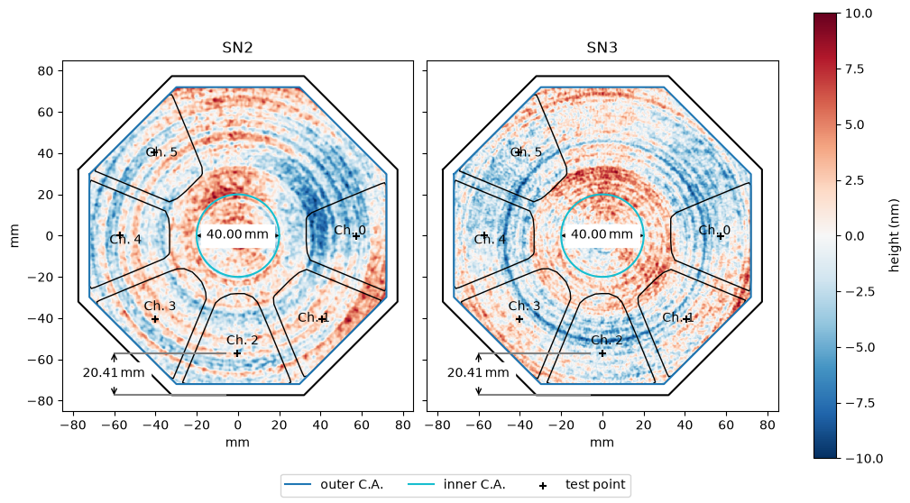
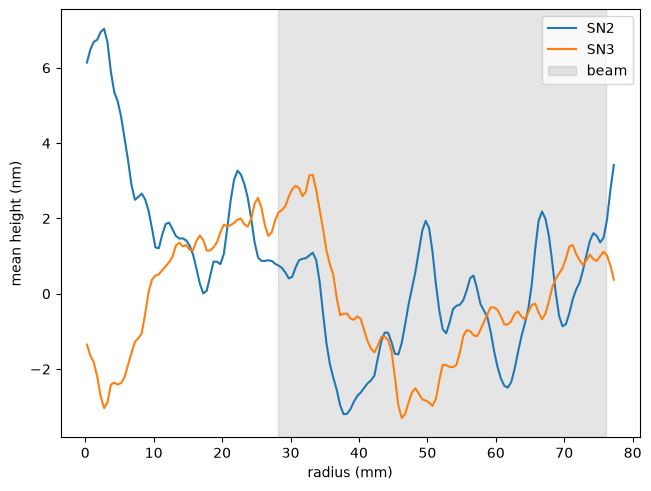
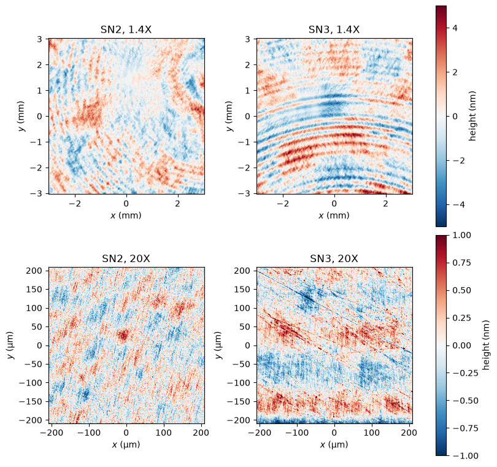

Primary Mirror#
Optimax Systems polished two primary mirrors for ESIS-II, serial numbers SN2 and SN3, and measured the figure of each with a Nanomefos profilometer, and its finish with a Zygo NexView white-light interferometer, in September 2026. Which of them will fly is not decided yet. This report shows those measurements, where the beam of each channel falls on them, and how they compare with the specifications on the drawing of the mirror.
The measurements are in the metrology-v1.0 release of
esis-data-f2,
and esis.flights.f2.optics.primaries.figures.figure_measurement()
downloads them the first time they are needed.
[1]:
import numpy as np
import matplotlib.pyplot as plt
import astropy.units as u
import astropy.visualization
import pandas
import named_arrays as na
import optika
import esis
Figure#
Load the map of the figure of each mirror. Each is the height of the surface relative to a paraboloid, with piston, tilt, and power removed, on a grid of pixels 0.25 mm apart which covers the clear aperture of the mirror.
[2]:
serial_numbers = ["SN2", "SN3"]
figures = {
serial_number: esis.flights.f2.optics.primaries.figures.figure_measurement(
serial_number,
)
for serial_number in serial_numbers
}
Plot both maps, with \(x\) to the right and \(y\) up, as Zygo’s software shows them. The comment in the header of each file says that the mirror was measured with its fiducial at 6 o’clock.
[3]:
kwargs_map = dict(
cmap="RdBu_r",
vmin=-10,
vmax=10,
)
with astropy.visualization.quantity_support():
fig, axs = plt.subplots(
ncols=len(serial_numbers),
sharey=True,
figsize=(8, 4),
constrained_layout=True,
)
for ax, serial_number in zip(axs, serial_numbers):
figure = figures[serial_number]
mappable = na.plt.pcolormesh(
figure.inputs.x,
figure.inputs.y,
C=figure.outputs.to(u.nm).value,
ax=ax,
**kwargs_map,
)
ax.set_aspect("equal")
ax.set_title(serial_number)
ax.set_xlabel(f"$x$ ({ax.get_xlabel()})")
axs[0].set_ylabel(f"$y$ ({axs[0].get_ylabel()})")
fig.colorbar(mappable.ndarray.item(), ax=axs, label="height (nm)")

Print the RMS and the peak-to-valley of the height of each map over the clear aperture of the mirror.
[4]:
statistics = pandas.DataFrame(
{
"RMS (nm)": [
np.sqrt(np.nanmean(np.square(figures[s].outputs))).ndarray.to_value(u.nm)
for s in serial_numbers
],
"PV (nm)": [
(np.nanmax(figures[s].outputs) - np.nanmin(figures[s].outputs))
.ndarray.to_value(u.nm)
for s in serial_numbers
],
},
index=serial_numbers,
)
print(statistics.round(2))
RMS (nm) PV (nm)
SN2 2.85 22.65
SN3 2.75 20.39
Footprint of the Beam#
Which parts of the mirror the light falls on depends on how the mirror is turned about its axis in the instrument, which is not decided yet either. To see one possibility, draw the footprint of the beam over each map, as in the footprint diagram of Design & Specifications. Start from the full ESIS-II design, with a dense grid of rays which goes almost to the edges of the field of view and of the pupil.
[5]:
instrument = esis.flights.f2.optics.design(num_distribution=0)
instrument.field = na.Cartesian2dVectorLinearSpace(
start=-0.99,
stop=+0.99,
axis=na.Cartesian2dVectorArray("fx", "fy"),
num=11,
)
instrument.pupil = na.Cartesian2dVectorLinearSpace(
start=-0.99,
stop=+0.99,
axis=na.Cartesian2dVectorArray("px", "py"),
num=41,
)
Draw the mirror turned by 22.5 degrees about its axis, so that the edges of its clear aperture are horizontal and vertical like those of the maps, and by 180 degrees about the \(y\) axis, so that it is seen from the front. The maps are taken to be seen from the front too.
[6]:
transformation = na.transformations.Cartesian3dRotationY(
180 * u.deg
) @ na.transformations.Cartesian3dRotationZ(22.5 * u.deg)
Plot the footprint of each channel over each map. The mirror would still fit the clear aperture if it were turned by any multiple of 45 degrees, and each of those turns would put the channels on different parts of the map.
[7]:
with astropy.visualization.quantity_support():
fig, axs = plt.subplots(
ncols=len(serial_numbers),
sharey=True,
figsize=(10, 5.5),
constrained_layout=True,
)
for ax, serial_number in zip(axs, serial_numbers):
figure = figures[serial_number]
mappable = na.plt.pcolormesh(
figure.inputs.x,
figure.inputs.y,
C=figure.outputs.to(u.nm).value,
ax=ax,
**kwargs_map,
)
instrument.schematic_primary(
ax=ax,
transformation=transformation,
kwargs_footprint=dict(edgecolor="black"),
)
ax.set_aspect("equal")
ax.set_title(serial_number)
fig.colorbar(mappable.ndarray.item(), ax=axs, label="height (nm)")
fig.legend(
*axs[0].get_legend_handles_labels(),
loc="outside lower center",
ncols=3,
)

Rings#
Both maps show rings about the center of the mirror. Unlike the rest of the figure, these do not depend on how the mirror is turned. Average the height of each map over azimuth, in rings 0.5 mm wide.
[8]:
edges = na.linspace(0, 77.5, axis="radius", num=156) * u.mm
profiles = dict()
for serial_number, figure in figures.items():
radius = figure.inputs.length
measured = np.isfinite(figure.outputs)
total = na.histogram(
radius,
bins=edges,
weights=np.where(measured, figure.outputs, 0 * u.nm),
)
count = na.histogram(radius, bins=edges, weights=measured)
profiles[serial_number] = total.outputs / count.outputs
Find how far from the center of the mirror the beam reaches, from the rays which reach the sensors.
[9]:
system = instrument.system
primary = instrument.primary_mirror.surface
rays = system.raytrace().outputs
unvignetted = rays.unvignetted[{system.axis_surface: ~0}]
rays = rays[{system.axis_surface: system.surfaces_all.index(primary)}]
position = primary.transformation.inverse(rays.position)
radius_beam = np.where(unvignetted, position.xy.length, np.nan)
radius_beam_min = np.nanmin(radius_beam).ndarray
radius_beam_max = np.nanmax(radius_beam).ndarray
radius_beam_min, radius_beam_max
[9]:
(<Quantity 28.10811062 mm>, <Quantity 76.15808317 mm>)
Plot the average height against radius, with the range of radii which the beam covers shaded.
[10]:
with astropy.visualization.quantity_support():
fig, ax = plt.subplots(constrained_layout=True)
for serial_number in serial_numbers:
na.plt.plot(
edges.cell_centers(axis="radius"),
profiles[serial_number].to(u.nm),
ax=ax,
label=serial_number,
)
ax.axvspan(
radius_beam_min,
radius_beam_max,
color="tab:gray",
alpha=0.2,
label="beam",
)
ax.set_xlabel(f"radius ({ax.get_xlabel()})")
ax.set_ylabel(f"mean height ({ax.get_ylabel()})")
ax.legend()

Finish#
Optimax also measured one field of the finish of each mirror through each of two objectives of the NexView: a field 6.07 mm square through its 1.4X objective, and a field 0.417 mm square through its 20X objective. The files do not say where on the mirror the fields are. Load each field, and remove from it a polynomial of the fourth degree, which takes out the piston and the tilt of the measurement, and the curvature of the mirror across the field.
[11]:
def remove_polynomial(
function: na.FunctionArray,
degree: int,
axis: tuple[str, str],
) -> na.FunctionArray:
"""Remove a polynomial fitted to the measured pixels of a map."""
measured = np.isfinite(function.outputs)
fit = na.PolynomialFitFunctionArray.from_degree(
inputs=function.inputs,
outputs=np.where(measured, function.outputs, 0 * u.nm),
degree=degree,
axis_polynomial=axis,
where_polynomial=measured,
)
return na.FunctionArray(
inputs=function.inputs,
outputs=function.outputs - fit.predictions,
)
objectives = ["1.4X", "20X"]
axis_finish = ("finish_x", "finish_y")
finishes = {
(serial_number, objective): remove_polynomial(
esis.flights.f2.optics.primaries.finishes.finish_measurement(
serial_number,
objective,
),
degree=4,
axis=axis_finish,
)
for serial_number in serial_numbers
for objective in objectives
}
Plot the fields of both mirrors through each objective.
[12]:
limits = {"1.4X": 5, "20X": 1}
units = {"1.4X": u.mm, "20X": u.um}
with astropy.visualization.quantity_support():
fig, axs = plt.subplots(
nrows=len(objectives),
ncols=len(serial_numbers),
figsize=(8, 7.5),
constrained_layout=True,
)
for row, objective in zip(axs, objectives):
for ax, serial_number in zip(row, serial_numbers):
finish = finishes[serial_number, objective]
mappable = na.plt.pcolormesh(
finish.inputs.x.to(units[objective]),
finish.inputs.y.to(units[objective]),
C=finish.outputs.to(u.nm).value,
ax=ax,
cmap=kwargs_map["cmap"],
vmin=-limits[objective],
vmax=limits[objective],
)
ax.set_aspect("equal")
ax.set_title(f"{serial_number}, {objective}")
ax.set_xlabel(f"$x$ ({ax.get_xlabel()})")
ax.set_ylabel(f"$y$ ({ax.get_ylabel()})")
fig.colorbar(mappable.ndarray.item(), ax=row, label="height (nm)")

Specifications#
The design carries the specifications of the figure and finish of the
primary mirror on revision A of its drawing.
The drawing calls the RMS height of the mirror at periods from 0.01 to 10 mm
its ripple,
which is roughness in the design,
and its roughness at periods from 1.6 to 70 µm is
microroughness.
Work out the slope error of each map with
optika.metrology.slope_error(),
which smooths the map with a boxcar as wide as the kernel of the
specification,
and takes the RMS of the slope across its step.
Nothing more is removed from the maps of the figure,
which come with piston, tilt, and power removed.
[13]:
primary = instrument.primary_mirror
sag = primary.sag
axis_figure = ("primary_x", "primary_y")
slope_error = {
serial_number: optika.metrology.slope_error(
figure_error=figures[serial_number],
parameters=sag.parameters_slope_error,
axis=axis_figure,
)
for serial_number in serial_numbers
}
The ripple and the roughness are the RMS of the height between two periods. Each map is filtered by the difference between two Gaussian filters, whose cutoffs are the two periods, as in ISO 16610-61, and the filters are applied with FFTs, as if each map repeated itself. Where a map has no data, the filters average only the pixels which were measured. Together with the polynomial removed from the fields of the finish, this reproduces the values in Optimax’s inspection record.
[14]:
def rms_band(
function: na.FunctionArray,
period_min: u.Quantity,
period_max: u.Quantity,
axis: tuple[str, str],
) -> na.AbstractScalar:
"""Return the RMS height of a map between two periods."""
axis_x, axis_y = axis
position = function.inputs
height = function.outputs
measured = np.isfinite(height)
spacing_x = position.x[{axis_x: 1}] - position.x[{axis_x: 0}]
spacing_y = position.y[{axis_y: 1}] - position.y[{axis_y: 0}]
frequency = na.Cartesian2dVectorArray(
x=na.ScalarArray(np.fft.fftfreq(height.shape[axis_x]), axis_x) / spacing_x,
y=na.ScalarArray(np.fft.fftfreq(height.shape[axis_y]), axis_y) / spacing_y,
)
axes = {axis_x: axis_x, axis_y: axis_y}
def lowpass(a: na.AbstractScalar, cutoff: u.Quantity) -> na.AbstractScalar:
"""Keep the periods of a map longer than a cutoff, with an FFT."""
alpha = np.sqrt(np.log(2) / np.pi)
transfer = np.exp(-np.pi * np.square(alpha * cutoff * frequency.length))
return np.real(np.fft.ifftn(np.fft.fftn(a, axes=axes) * transfer, axes=axes))
def smooth(cutoff: u.Quantity) -> na.AbstractScalar:
"""Low-pass the map, averaging only the pixels which were measured."""
total = lowpass(np.where(measured, height, 0 * height.unit), cutoff)
weight = lowpass(measured * 1.0, cutoff)
return total / np.where(measured, weight, 1)
band = smooth(period_min) - smooth(period_max)
return np.sqrt(np.mean(np.square(band), where=measured, axis=axis))
def ripple(
serial_number: str,
instrument: str,
period_min: u.Quantity,
period_max: u.Quantity,
) -> u.Quantity:
"""Return the RMS height of a mirror between two periods, from one instrument."""
if instrument == "Nanomefos":
result = rms_band(figures[serial_number], period_min, period_max, axis_figure)
else:
finish = finishes[serial_number, instrument]
result = rms_band(finish, period_min, period_max, axis_finish)
return result.ndarray.to(u.nm)
No one instrument resolves the whole band of the ripple: the field of the 20X objective is only 0.417 mm across, the field of the 1.4X objective is 6.07 mm across, and the pixels of the Nanomefos maps are 0.25 mm apart. Optimax measured the ripple in a window of periods for each of them. Print the slope error, the ripple in each window, and the roughness of each mirror, next to their specifications.
[15]:
period_min = sag.parameters_roughness.period_min
period_max = sag.parameters_roughness.period_max
windows = {
"20X": (period_min, 0.4 * u.mm),
"1.4X": (0.04 * u.mm, 6 * u.mm),
"Nanomefos": (6 * u.mm, period_max),
}
step = sag.parameters_slope_error.step_size.to_value(u.mm)
kernel = sag.parameters_slope_error.kernel_size.to_value(u.mm)
label = f"slope error, {step:g} mm step, {kernel:g} mm kernel (µrad)"
rows = {
label: [primary.slope_error.to(u.urad)]
+ [slope_error[s].ndarray.to(u.urad) for s in serial_numbers],
}
for name, (start, stop) in windows.items():
label = f"ripple, {start.to_value(u.mm):g}-{stop.to_value(u.mm):g} mm, {name} (nm)"
rows[label] = [primary.roughness.to(u.nm)] + [
ripple(s, name, start, stop) for s in serial_numbers
]
band = sag.parameters_microroughness
label = (
f"roughness, {band.period_min.to_value(u.um):g}"
f"-{band.period_max.to_value(u.um):g} µm, 20X (nm)"
)
rows[label] = [primary.microroughness.to(u.nm)] + [
ripple(s, "20X", band.period_min, band.period_max) for s in serial_numbers
]
specifications = pandas.DataFrame(
{label: [value.value for value in values] for label, values in rows.items()},
index=["specification"] + serial_numbers,
).T
print(specifications.round(3))
specification SN2 SN3
slope error, 10 mm step, 5 mm kernel (µrad) 0.5 0.287 0.269
ripple, 0.01-0.4 mm, 20X (nm) 1.6 0.188 0.259
ripple, 0.04-6 mm, 1.4X (nm) 1.6 1.081 1.340
ripple, 6-10 mm, Nanomefos (nm) 1.6 0.492 0.404
roughness, 1.6-70 µm, 20X (nm) 1.0 0.199 0.244
The drawing does not say how the band of the ripple is to be split between instruments, and the windows overlap. To estimate the ripple over the whole band instead, split it into parts which do not overlap: the 20X field from 0.01 to 0.04 mm, the 1.4X field from 0.04 mm to a split, and the Nanomefos map from the split to 10 mm, and add the parts in quadrature. The total depends on where the split between the 1.4X field and the Nanomefos map falls. The 1.4X field is one small part of each mirror, and the polynomial removed from it takes out much of its height at periods near its size, while the Nanomefos maps cover the whole clear aperture.
[16]:
splits = [1, 2, 3, 6] * u.mm
totals = dict()
for split in splits:
totals[f"{split.to_value(u.mm):g} mm"] = [
np.sqrt(
np.square(ripple(s, "20X", period_min, 0.04 * u.mm))
+ np.square(ripple(s, "1.4X", 0.04 * u.mm, split))
+ np.square(ripple(s, "Nanomefos", split, period_max))
).value
for s in serial_numbers
]
ripple_total = pandas.DataFrame(totals, index=serial_numbers).T
ripple_total.index.name = "split"
print(f"ripple, {period_min:g} to {period_max:g} (nm),")
print(f"specification {primary.roughness:g}")
print(ripple_total.round(3))
ripple, 0.01 mm to 10 mm (nm),
specification 1.6 nm
SN2 SN3
split
1 mm 1.595 1.710
2 mm 1.518 1.584
3 mm 1.416 1.497
6 mm 1.190 1.405